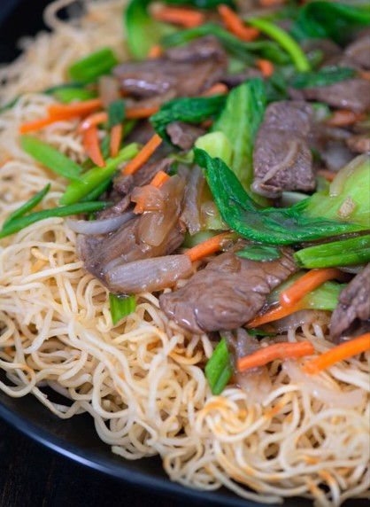

Pan Fried Noodles With Beef And Veggies Recipe
What is Pan Fried Noodles With Beef And Veggies?
A dish that is definitely hard to say no to is a deliciously filling plate of Pan Fried Noodles. It's the kind of meal that also goes with a great variety of toppings and spices. It can work like a perfect blank canvas for most recipes with its satisfying texture and somewhat neutral flavor. But a lot of Filipinos love to have it in this very classic way— with an abundance of leafy vegetables and the most tasty slices of beef.
Ingredients
14 ounces egg noodles
1/2 lb. beef
1/4 cup green onion
3 bunches bok choy
1/2 cup carrots
1 onion
2 cloves garlic
1 teaspoon minced ginger
5 tablespoons cooking oil
3 1/2 Tablespoons oyster sauce
2 teaspoons sesame oil
1 teaspoon sugar
2 Tablespoons soy sauce
3 Tablespoons Shaoxing cooking wine
1 1/2 cups water
3 teaspoons cornstarch
1/8 teaspoon ground white pepper
Instructions / How to Cook
1. Prepare the noodles based on package instructions. Discard remaining water.
2. Heat 2 tablespoons of cooking oil in a pan. Add the noodles. Fry until the bottom part turns light brown. Continue by frying the opposite side (Note: if necessary, do this in 2 batches). Remove the noodles from the pan and arrange on a serving dish.
3. Combine all the sauce ingredients in a bowl. Mix well. Set aside.
4. Heat remaining oil on the same pan. Stir fry the beef until it browns. Add onion, ginger, and garlic. Cook until onion softens.
5. Add green onion and bok choy. Cook for 1 minute.
6. Pour the sauce mixture into the pan. Stir. Continue cooking until the sauce thickens to your desired consistency.
7. Pour everything over the fried noodles. Serve hot.
8. Share and enjoy!